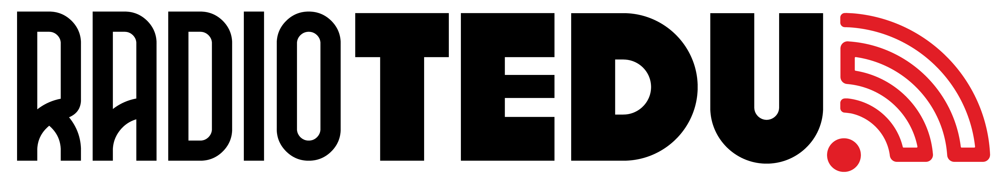

ASES ÇALARIEMPTY
Dinlemeyi başlat
Kayıt, dinlemeye katıldığında yüklenir.
Hazır bekliyor00:00

TED ÜNİVERSİTESİ'NİN SESİRADIO TEDU / ÖZEL YAYIN
YAYIN BİLGİSİ
RadioTEDU'nun özel DJ yayını
Bir sonraki parça.
Başka bir bağlantı.
Kayıt, dinlemeye katıldığında yüklenir.
Geçiş için hazırlanacak.
DÜŞÜNCE ÇALARI
Ses çalmaz. Sineğin seçeneklerini gösterir.
DÜŞÜNCE ÇALARI
Ses çalmaz. Sineğin seçeneklerini gösterir.
Müzik akışına bir konektom deneyi eşlik ediyor.
MaleCNS bağlantıları / RadioTEDU tasarımı
DJ Fly, HHMI Janelia MaleCNS Drosophila konektomundan türetilmiş gerçek bağlantıları kullanır. RadioTEDU, müzik ve DJ durumu özelliklerini yapay sinir girdilerine dönüştürür. Basitleştirilmiş modelde yayılan etkinliğin çıktıları, güvenli seçenekler arasındaki parça ve geçiş tercihlerini etkiler.
Bağlantı verisi biyolojik kaynaktan gelir; girdi eşlemeleri, etkinlik modeli, DJ kuralları ve görsel düzen RadioTEDU tasarımıdır. Bu, yaşayan bir sineğin eksiksiz beyin simülasyonu değildir. C ve D düşünce çalarlarıdır; ses A ve B'de karışır.
MaleCNS v1.0 · HHMI Janelia FlyEM ve proje ortakları
CC BY 4.0. Türetilmiş alt ağ, yapay müzik eşlemeleri ve basitleştirilmiş model: RadioTEDU.